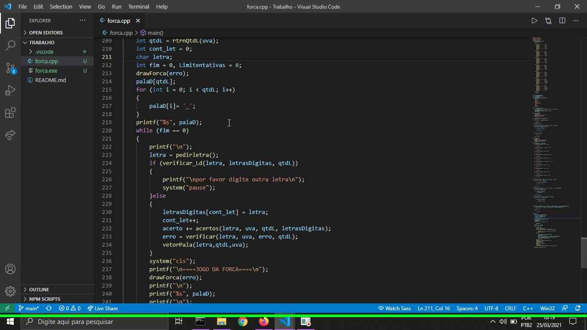
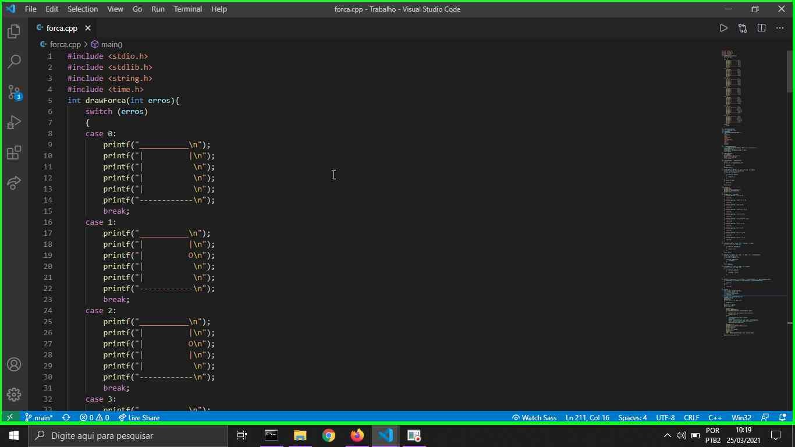

Jogo da forca é um passatempo onde deve se descobrir a palavra sorteada por letra se houver muitos erros o jogador perde.
 Abrir repositório
Abrir repositório
Imagens do projeto:
 Versões do projeto:
-
Jogo da Forca
Descrição: Esse jogo da forca foi criado como um trabalho da matéria de Algoritimos e Técnicas de Programação
Abrir repositório